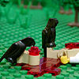

|
|
|
1 Kings 16
|
|
| 16:1
Then the word of the LORD came to Jehu the son of Hanani against Baasha,
saying, |
|
| 16:2
Forasmuch as I exalted thee out of the dust, and made thee prince over my
people Israel; and thou hast walked in the way of Jeroboam, and hast made my
people Israel to sin, to provoke me to anger with their sins; |
Baasha's Family Slaughtered
|
| 16:3
Behold, I will take away the posterity of Baasha, and the posterity of his
house; and will make thy house like the house of Jeroboam the son of Nebat.
|
| 16:4
Him that dieth of
Baasha in the city shall the dogs eat; and him that dieth of his in
the fields shall the fowls of the air eat. |


 (16:3-4) "I will ... make thy house like the house of Jeroboam.
Him that dieth of Baasha in the city shall the dogs eat; and him that dieth of his in the fields shall the fowls of the air eat." (16:3-4) "I will ... make thy house like the house of Jeroboam.
Him that dieth of Baasha in the city shall the dogs eat; and him that dieth of his in the fields shall the fowls of the air eat."
God says he's going to kill Baasha's family (like he did Jeroboam's) and feed them to the dogs and birds.
|
| 16:5
Now the rest of the acts of Baasha, and what he did, and his might, are
they not written in the book of the chronicles of the kings of Israel?
|
| 16:6
So Baasha slept with his fathers, and was buried in Tirzah: and Elah his
son reigned in his stead. |
 (16:6-8) "In the twenty and sixth year of Asa king of Judah began Elah
the son of Baasha to reign." (16:6-8) "In the twenty and sixth year of Asa king of Judah began Elah
the son of Baasha to reign."
Baasha died in the 26th year of Asa, yet 2 Chronicles 16:1 says that Baasha went to war with Judah in the 36th
year of Asa's reign -- which means that Baasha was still fighting 10 years after his death!
When did Baasha die?
(16:7) "Because he killed him."
God will kill Baasha and his family for killing Jeroboam and his family (even though God wanted him to do it).
|
| 16:7
And also by the hand of the prophet Jehu the son of Hanani came the word
of the LORD against Baasha, and against his house, even for all the evil
that he did in the sight of the LORD, in provoking him to anger with the
work of his hands, in being like the house of Jeroboam; and because he killed him.
|
| 16:8
In the twenty and sixth year of Asa king of Judah began Elah the son of
Baasha to reign over Israel in Tirzah, two years.
|
| 16:9
And his servant Zimri, captain of half his chariots, conspired against
him, as he was in Tirzah, drinking himself drunk in the house of Arza
steward of his house in Tirzah.
|
| 16:10
And Zimri went in and smote him, and killed him, in the twenty and seventh
year of Asa king of Judah, and reigned in his stead. |
|
| 16:11
And it came to pass, when he began to reign, as soon as he sat on his
throne, that he slew all
the house of Baasha: he left him not one that pisseth against a wall,
neither of his kinsfolks,
nor of his friends. |
 (16:11-12) "He slew all the house of Baasha: he left him not one that pisseth against a wall, neither of his kinsfolks,
nor of his friends. Thus did Zimri destroy all the house of Baasha, according to the word of the LORD."
(16:11-12) "He slew all the house of Baasha: he left him not one that pisseth against a wall, neither of his kinsfolks,
nor of his friends. Thus did Zimri destroy all the house of Baasha, according to the word of the LORD."
Zimri kills everyone "that pisseth
against a wall ... according to the word of the Lord."
God's 90th Killing
|
| 16:12
Thus did Zimri destroy
all the house of Baasha, according to the word of the LORD, which
he spake against Baasha by Jehu the prophet.
|
| 16:13
For all the sins of Baasha, and the sins of Elah his son, by which they
sinned, and by which they made Israel to sin, in provoking the LORD God of
Israel to anger with their vanities.
|
| 16:14
Now the rest of the acts of Elah, and all that he did, are they not
written in the book of the chronicles of the kings of Israel? |
|
| 16:15
In the twenty and seventh year of Asa king of Judah did Zimri reign seven
days in Tirzah. And the people were encamped against Gibbethon, which
belonged to the Philistines. |
King for a week
|
| 16:16
And the people that were encamped heard say, Zimri hath conspired, and
hath also slain the king: wherefore all Israel made Omri, the captain of the
host, king over Israel that day in the camp.
|
| 16:17
And Omri went up from Gibbethon, and all Israel with him, and they
besieged Tirzah. |
|
| 16:18
And it came to pass, when Zimri saw that the city was taken, that he went
into the palace of the king's house, and burnt the king's house over him
with fire, and died. |
 (16:18-19) "When Zimri saw that the city was taken, that he went
into the palace of the king's house, and burnt the king's house over him
with fire, and died. For his sins which he sinned in doing evil in the sight of the LORD, in
walking in the way of Jeroboam, and in his sin which he did, to make Israel
to sin." (16:18-19) "When Zimri saw that the city was taken, that he went
into the palace of the king's house, and burnt the king's house over him
with fire, and died. For his sins which he sinned in doing evil in the sight of the LORD, in
walking in the way of Jeroboam, and in his sin which he did, to make Israel
to sin."
Did God force Zimri to burn himself to death?
God's 91st Killing
|
| 16:19
For his sins which he sinned in doing evil in the sight of the LORD, in
walking in the way of Jeroboam, and in his sin which he did, to make Israel
to sin.
|
| 16:20
Now the rest of the acts of Zimri, and his treason that he wrought, are they not written in the book of the chronicles of the
kings of Israel?
|
| 16:21
Then were the people of Israel divided into two parts: half of the people
followed Tibni the son of Ginath, to make him king; and half followed Omri.
|
| 16:22
But the people that followed Omri prevailed against the people that
followed Tibni the son of Ginath: so Tibni died, and Omri reigned. |
|
| 16:23
In the thirty and first year of Asa king of Judah began Omri to reign over
Israel, twelve years: six years reigned he in Tirzah. |
|
| 16:24
And he bought the hill Samaria of Shemer for two talents of silver, and
built on the hill, and called the name of the city which he built, after the
name of Shemer, owner of the hill, Samaria. |
|
| 16:25
But Omri wrought evil in the eyes of the LORD, and did worse than all that
were before him. |
 (16:25) "Omri ... did worse than all that were before him." (16:25) "Omri ... did worse than all that were before him."
Omni was the worst person that ever existed (up to that time, anyway).
|
| 16:26
For he walked in all the way of Jeroboam the son of Nebat, and in his sin
wherewith he made Israel to sin, to provoke the LORD God of Israel to anger
with their vanities.
|
| 16:27
Now the rest of the acts of Omri which he did, and his might that he
shewed, are they not written in the book of the chronicles of the kings of
Israel? |
|
| 16:28
So Omri slept with his fathers, and was buried in Samaria: and Ahab his
son reigned in his stead. |
|
| 16:29
And in the thirty and eighth year of Asa king of Judah began Ahab the son
of Omri to reign over Israel: and Ahab the son of Omri reigned over Israel
in Samaria twenty and two years. |
(16:30) "Ahab the son of Omri did evil in the sight of the LORD above all that
were before him."
Ahab was the worst person that ever existed. He replaced his father Omri as the worst person in the world.
(16:33) "Ahab did more to provoke the LORD God of Israel
to anger than all the kings of Israel that were before him."
(16:34) "He laid the foundation
thereof in Abiram his firstborn, and set up the gates thereof in his
youngest son Segub, according to the word of the LORD."
When Hiel rebuilds Jericho, he lays the
foundation with the body of his oldest son and sets up the gates with his
youngest son's body "according to the word of the Lord."
Did God want Hiel to sacrifice his sons in this way? Did he make him do it? What does "according to the word of the Lord" mean here?
|
16:30
And Ahab the son of Omri did evil in the sight of the LORD above all that
were before him.
| 16:31
And it came to pass, as if it had been a light thing for him to walk in
the sins of Jeroboam the son of Nebat, that he took to wife Jezebel the
daughter of Ethbaal king of the Zidonians, and went and served Baal, and
worshipped him.
| | 16:32
And he reared up an altar for Baal in the house of Baal, which he had
built in Samaria.
| | 16:33
And Ahab made a grove; and Ahab did more to provoke the LORD God of Israel
to anger than all the kings of Israel that were before him.
| | 16:34
In his days did Hiel the Bethelite build Jericho: he laid the foundation
thereof in Abiram his firstborn, and set up the gates thereof in his
youngest son Segub, according to the word of the LORD, which he
spake by Joshua the son of Nun.
|
| |